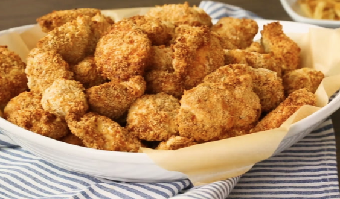

Air Fryer Chicken Nuggets

What Makes This Air Fryer Chicken So Good?
These chicken nuggets come out perfectly crispy on the outside and tender and juicy on the inside, thanks to the air fryer.
Ingredients
- 1 cup buttermilk
- 2 pounds chicken tenderloins, cut into nugget size
- 1 cup flour
- 3 tablespoons grated Parmesan cheese
- 1 tablespoon paprika
- 1 tablespoon parsley flakes
- 1 teaspoon salt
- 1 teaspoon ground black pepper
- 2 cups panko bread crumbs
- cooking spray
Steps
- Mix buttermilk and chicken in a large bowl; set aside to soak while you prepare seasoned flour.
- Combine flour, Parmesan cheese, paprika, parsley, salt, and pepper in a large bowl. Beat eggs in a separate bowl. Pour bread crumbs onto a flat plate.
- Dredge each chicken nugget first in flour, then in beaten egg, and finally coat in bread crumbs.
- Preheat the air fryer to 400 degrees F (200 degrees C). Spray the basket with cooking spray. Place as many nuggets into the basket as you can without overcrowding. Lightly mist the tops of the nuggets with cooking spray.
- Cook for 10 minutes. Flip chicken nuggets and cook for an additional 2 minutes. Remove and repeat with remaining nuggets.